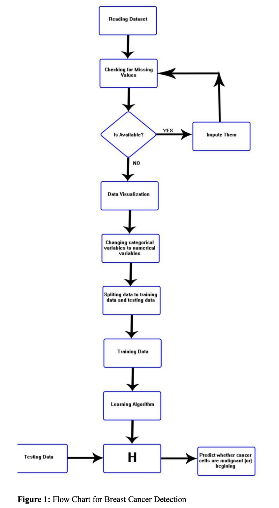
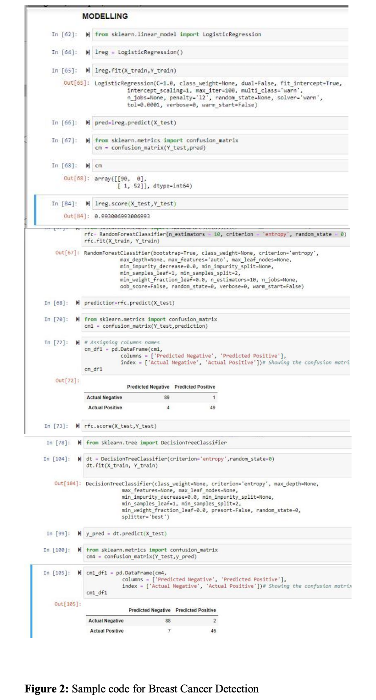
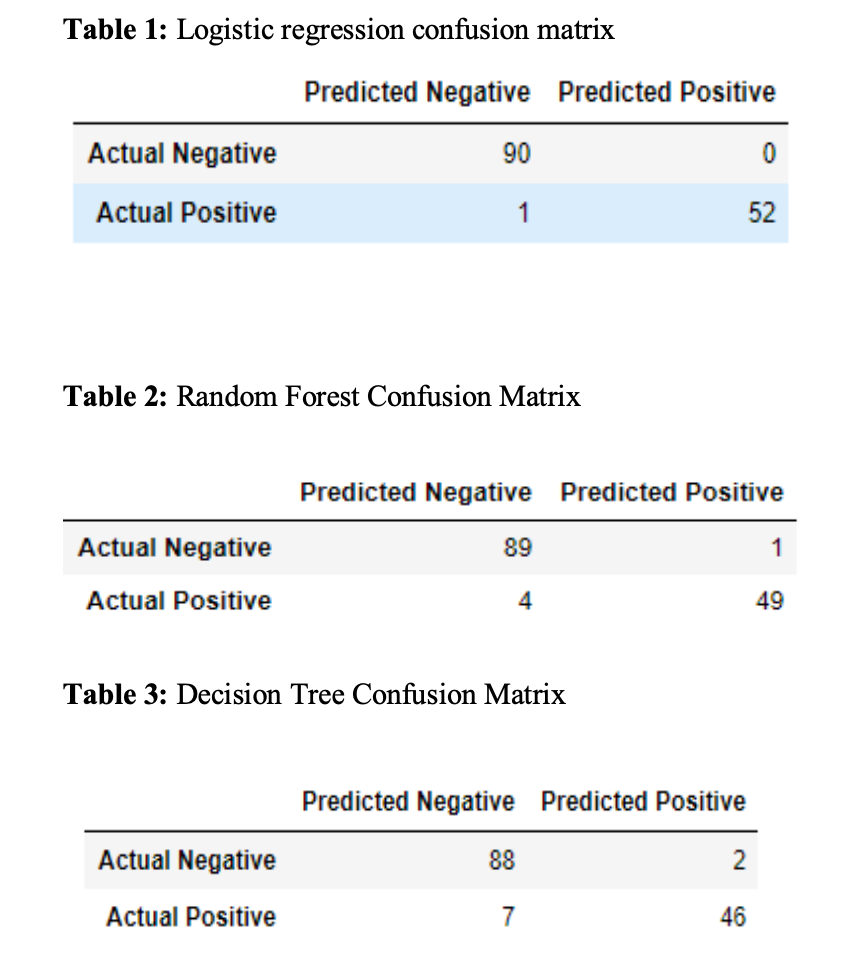
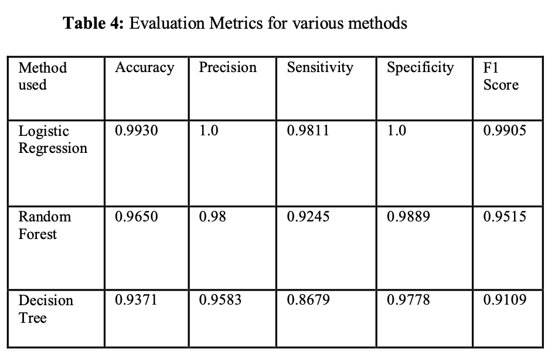

Breast Cancer Detection Using Machine Learning
 Publication Link
Dataset Link
Code Link
Publication Link
Dataset Link
Code Link
Introduction:
Breast Cancer is one of the cancers which is claiming women's lives.Breast cancers are categorized according to the area in which they begin, that is, the ducts, the lobules, and the tissue in the middle. They can however generally be classified as benign and malignant. A Benign tumor that doesn’t spread to the other breast tissues and Malignant tumors spread to the other breast tissues. Previously many Technologies have been used to identify breast cancer, By Mammography the breast tissue is screened which decreases the death rate of breast cancer, but it has certain limitations. Ultrasound Imaging is also used to identify by sending ultrasonic waves into the body, but it also has limitations like it cannot detect tumor which size is less than 5 mm. Sonography is another technology to identify the tumors initially it is done with mammography and Sonography checks any abnormalities in it. By Infrared Thermography, Infrared sensors are used to image the heat differences in the breast tissue. Regions which are having high temperature are considered as tumors. All these technologies didn’t show accurate results and were a kind of risky. Nowadays Technology is well developed and new technologies were getting more accurate results than older ones. Machine learning is part of Artificial Intelligence(AI) which allows systems to learn automatically based on machine learning algorithms and improve the performance of the system without any programming. Doctors want to distinguish between these tumors through a good diagnosis process. Tumors even by specialists are generally very difficult to identify. Automation of the diagnostic device is also essential to diagnose tumors. Several researchers pursued early detection of cancer by machine learning techniques. Such approaches perform well in cancer diagnostics, as the researchers have shown. Machine Learning techniques are the most used techniques for finding breast cancer and these techniques are easy and safe for the patients. These techniques include logistic regression, Random Forest, Decision Tree, Etc ., Logistic Regression uses a cancer database and classifies the tumors as benign and malignant based on the size and nature of tumor which gives 99.3 percent accuracy in the result. The random forest technique combines all the basic multiple algorithms and gives the result. It uses classification and regression methods to solve problems which gives 96.5 percent accuracy as a result. Decision Tree classifier method gives 93.71 percent accuracy. So These machine learning techniques give more accurate results when compare to older technologies which gives 70 to 80 percent accuracy.
Methodology:
First, the Breast Cancer Wisconsin (Diagnostic) Data Set[12] collected from the UCI machine learning repository must be read. It consists of 569 rows and 32 columns. Then, check for missing values in the data set and impute if any. Next, visualize the data attributes using histograms, box plot, etc. Now, to work with continuous variables, the categorical variables in our data set are converted into continuous variables by performing one-hot encoding. Next, the data set is split into the training data set and testing data set. Then feature scaling is performed by using Standard Scaler. Standard scaler will normalize the features such that each feature will be having mean as 0 and standard deviation as 1. Then the training data set is given to learning algorithms like logistic regression, random forest, and decision tree to generate models. Now to predict whether the cancer cells are malignant or benign, the test data should be given to the model which was generated by using the training data set. Finally, for the Breast Cancer Wisconsin (Diagnostic) Data Set[12] Logistic regression has achieved 99.3% accuracy, Random Forest Classifier has achieved 96.5% accuracy and decision tree Classifier has achieved 93.7% accuracy. Flow chart for the Breast Cancer Detection has been shown in Figure 1. Sample code for the Breast Cancer Detection is shown in Figure 2.
Confusion Matrix for Logistic Regression, Random Forest, Decision Tree Classifier are shown in Table 1, Table 2, Table 3 respectively.
Evaluation Metrics for various Machine Learning Techniques used in this work are shown in Table 4.
Conclusion:
There is a chance of 12% for a woman picked randomly to be diagnosed with breast cancer. So the early detection of breast cancer will be very useful in treatment. In this work, various Machine learning supervised algorithms are used for the detection of Breast Cancer. On the Breast Cancer Wisconsin (Diagnostic) Data Set 3 main algorithms are used which are Logistic Regression, Random Forest Classifier, and Decision Tree Classifier. It has been observed that Logistic regression has achieved a higher efficiency of 99.3% accuracy whereas Random Forest Classifier has achieved 96.5% accuracy and Decision Tree Classifier has achieved 93.7% accuracy. Thus supervised machine learning algorithms will be very useful in early diagnosis and prognosis of cancer type.